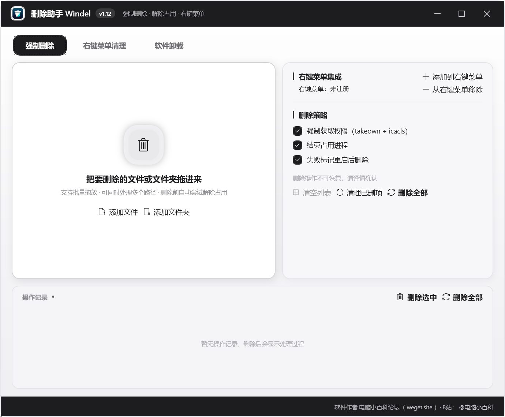
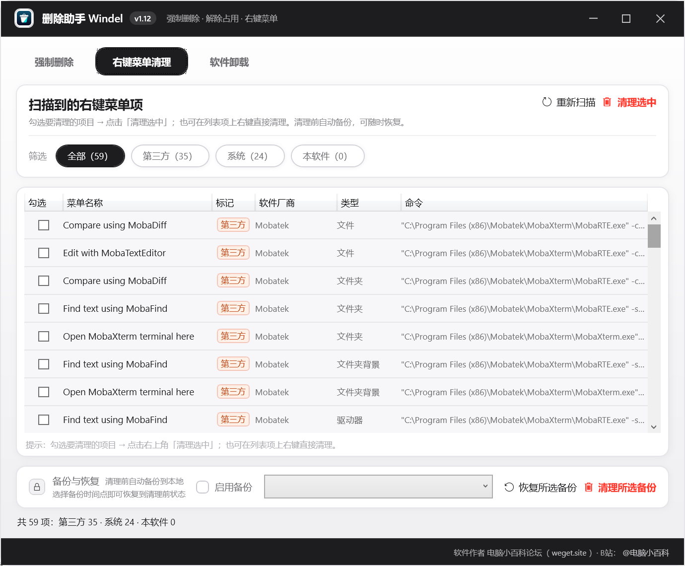
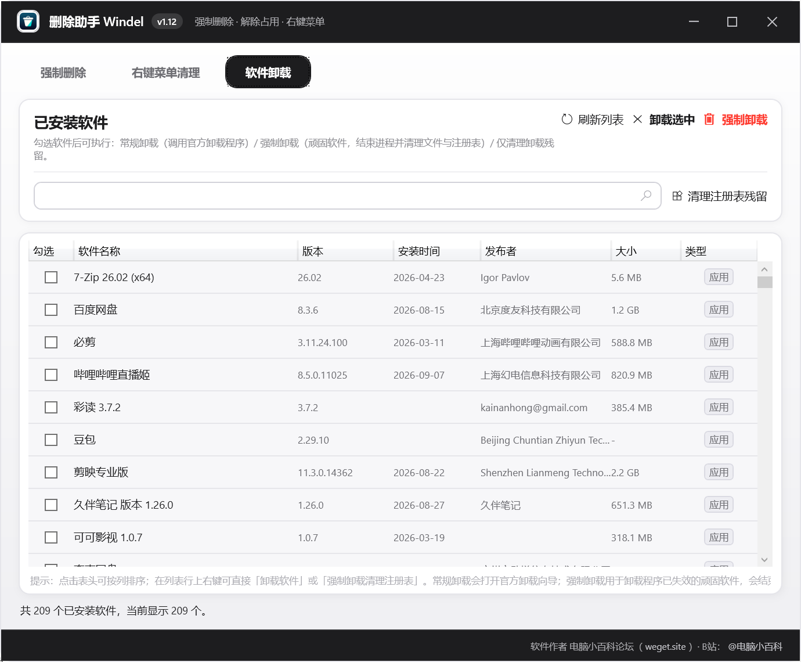

删除助手 Windel —— Windows 上删不掉的文件、占用中的进程、杂乱的右键菜单、卸载不掉的软件，一个工具全部搞定。开源永久免费。
单文件绿色软件 · 免安装 · 支持 Windows 10 / 11 · 已通过作者实测

三大功能模块清晰分离，删除前自动备份、可恢复，误操作也有后悔药。
支持文件、文件夹批量拖放删除。自动尝试强制获取权限（takeown + icacls）、结束占用进程，仍失败时标记为重启后删除，绝不半途而废。
扫描全部右键菜单项，按第三方 / 系统 / 本软件分类统计。勾选即可清理，清理前自动备份，随时一键恢复。

扫描已安装软件，支持按名称搜索、按任意列排序。常规卸载调用官方卸载向导；顽固软件一键强制卸载，结束进程、删除目录、清理注册表与快捷方式。

把文件或文件夹拖进窗口即可排队删除，支持批量，全程可视化反馈。
takeown + icacls 自动接管文件权限，只读、受保护文件也能删。
删除前自动定位并结束正在占用文件的进程，不再提示"文件被占用"。
扫描全部右键菜单，第三方项分类标记，清理前后自动备份可恢复。
扫描已装软件，常规卸载走官方向导，顽固软件强制卸载并清理残留。
一个 exe 到处用，免安装免依赖，U 盘拷贝即走，无后台无广告。
精简版为唯一发行版本：单文件、体积小、双击即用。下载后如缺少 .NET 环境，程序会自动引导安装。
单文件绿色软件，体积不到 2 MB，双击即用。适合网络条件有限或追求极致小巧的用户。
| 文件大小 | 1.1 MB（单文件） |
| 系统要求 | Windows 10 / 11 x64 |
| 安装方式 | 免安装，双击运行 |
| 运行环境 | 需 .NET 8 桌面运行时 |